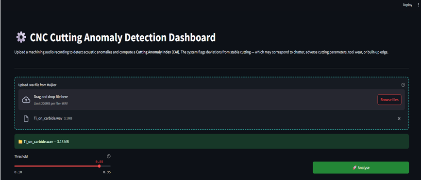
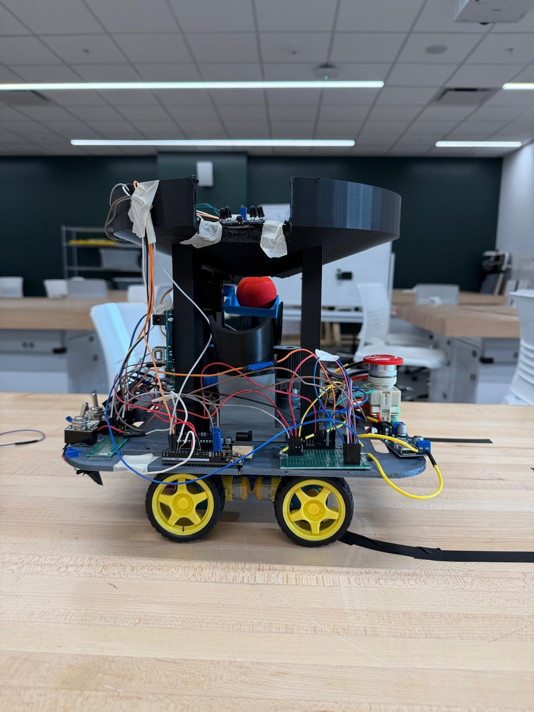
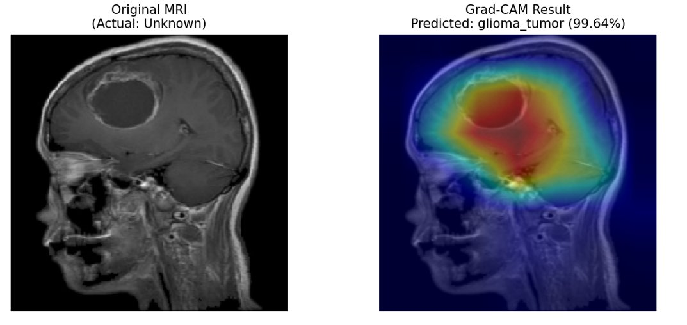

Projects
Hardware and software systems built and tested on real robots.
Design and Development of a Collaborative Robot
Built a 4-DOF collaborative robot arm from scratch with three teammates. PLA 3D-printed links designed in Fusion 360, driven by Waveshare serial servo motors. Taught by physical guidance: move the arm to record, replay to execute. Achieved 0.5mm positional accuracy and 0.1mm repeatability.
Cobot-AMR Pick-and-Place Integration
Together with my incredible teammates, I built a fully automated multi-robot workflow at Purdue's Build@Scale Lab. We programmed two Techman cobots (TM-12S and TM-12) for pick-and-place operations and a Fetch Freight 100 AMR for autonomous cart transport between stations. The entire 6-task routine, from cup placement through magnet insertion to return, ran end to end without human intervention, orchestrated through Node-RED using Modbus for cobot control and HTTP triggers/webhooks for AMR coordination via FetchCore.
Visuomotor Imitation Learning for Robotic Pick-and-Place and Precision Manipulation
Working with my teammates, I built an imitation learning pipeline for robotic manipulation using SO-101 leader-follower arms, the LeRobot framework, and a RealSense camera. We collected teleoperation demonstrations (100 episodes for pick-and-place, 30 for USB insertion, 16 for component disassembly), trained ACT visuomotor policies on a Google Colab A100, and deployed them on real hardware for autonomous execution.

1 / 4Acoustic-Based CNC Cutting Anomaly Detection
Led the ML engineering for an acoustic anomaly detection system for CNC machining, built in collaboration with Maijker Corp and Purdue's MMRL. Trained a CNN on Mel spectrograms from a Maijker stethoscope sensor to classify stable vs. anomalous cutting in real time. Achieved 86% anomaly precision (0.91 ROC-AUC), validated on blind titanium cutting tests, and deployed as a Streamlit dashboard with TFLite for edge-ready inference.

1 / 3Autonomous Mechatronic Robot with Dual-Arduino, PID Control, FSM & BLDC Actuation
Built an autonomous competition robot with my teammates for the ME 588 STORM challenge. The bot follows taped lines using a SparkFun 8-sensor IR array with PD control, detects opponent-controlled HILLs via IR beacon frequency classification (750/1500 Hz), and launches foam balls with a BLDC flywheel and servo-gated hopper. Runs on a dual-Arduino architecture with an 9-state FSM, dual PCA9685 servo drivers at separate frequencies (1000 Hz for drive, 50 Hz for launcher), and an IR voting system for launch decisions.
Smooth Trajectory Planning & Kinematic Simulation of a UR3e Industrial Robot
Designed a custom Lissajous trajectory for a UR3e arm using Modern Robotics (Product of Exponentials). Implemented FK in Space and Body frames, iterative IK via Body Jacobian, and trapezoidal velocity profiling with singularity avoidance. Exported joint solutions to CSV and replayed live in ROS 2 with RViz tool-trace visualization and LED-controlled light-painting.
Search and Localization of Colored Objects (No Nav2)
Autonomous search and localization of colored spherical objects in a known indoor environment using TurtleBot3 in Gazebo. Fuses camera-based color detection with LiDAR range and bearing data to estimate object positions in the global map frame. Uses AMCL for localization, waypoint-based exploration with 360-degree scanning, and publishes detected positions to color-specific ROS topics, all without the Nav2 stack.
Autonomous Mapping without Nav2
Fully autonomous exploration and mapping of an unknown indoor environment using TurtleBot3 in Gazebo. Implements frontier-based exploration with custom global planning and reactive obstacle avoidance. Runs online SLAM via slam_toolbox to generate occupancy grid maps (.pgm/.yaml) with no teleoperation, no predefined waypoints, and no Nav2.
A* Autonomous Navigation (Sim + Hardware)
Custom A* path planning and autonomous navigation for TurtleBot4 in ROS 2 Humble. Loads occupancy grid maps, inflates obstacles by robot footprint, builds an 8-connected graph, and plans paths with Euclidean-heuristic A*. A lookahead-based path follower with exponential velocity smoothing drives the robot. Deployed on both Gazebo simulation and physical TurtleBot4 hardware using AMCL localization.
Obstacle Avoidance with A* and Local RRT* Re-planning
Autonomous navigation on a known map using A* for global path planning and a local RRT* replanner triggered for dynamic obstacle avoidance. TurtleBot3 localizes with AMCL on a pre-built map and accepts goals interactively through RViz. Fully custom planning, control, and re-planning pipeline with no Nav2 dependency.

1 / 4Two-Stage ResNet50 for Brain Tumor Detection and Subtype Classification
Built a two-stage ResNet50 pipeline for MRI brain tumor analysis. Stage 1 detects tumors at 93.3% accuracy; Stage 2 classifies into 4 subtypes at 86.9% with Grad-CAM interpretability. Deployed as a Streamlit web app.